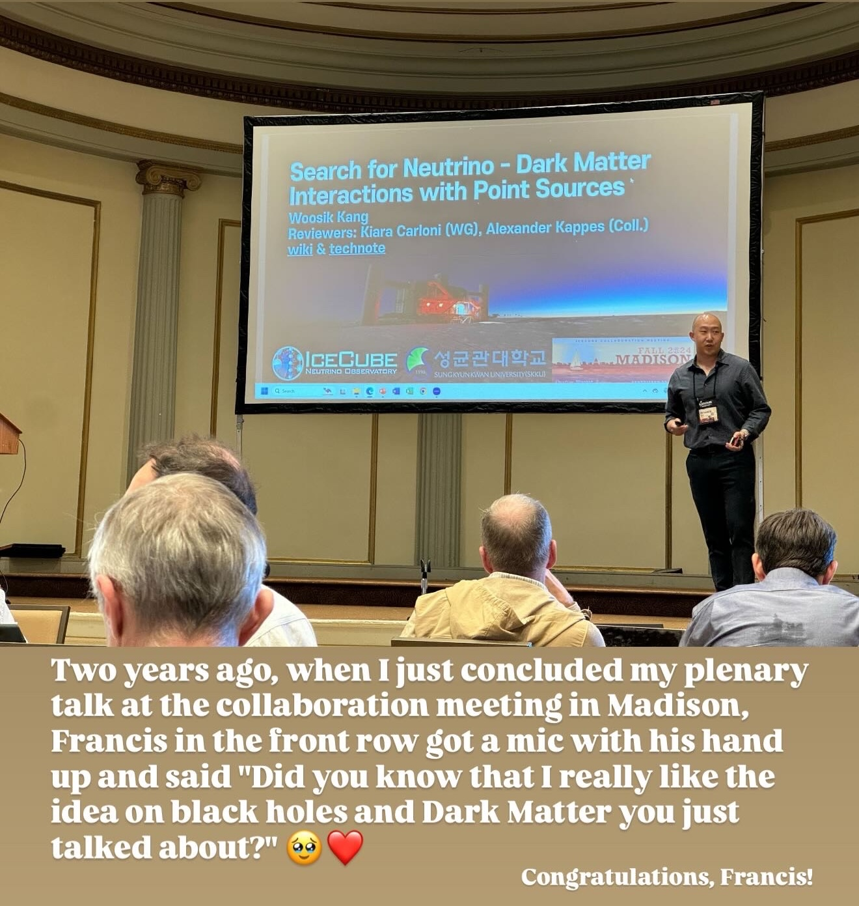

About
About me
I completed my undergraduate studies in Physics at Sungkyunkwan University (SKKU), South Korea.
I continued my graduate studies at the same institute and received my PhD in Physics in 2025.
I am now a Postdoctoral Research Fellow in Physics at Drexel University, working in astrophysics and astroparticle physics.
I have been affiliated with the IceCube Neutrino Observatory since 2016, and my work spans calibration hardware development and astrophysical neutrino data analyses, including searches for interactions between dark matter and high-energy astrophysical neutrinos.
I have been affiliated with the Pacific Ocean Neutrino Experiment (P-ONE) since 2025, and my work focuses on neutrino point-source searches using the proposed P-ONE detector.
Outreach
I am always happy to share recent developments in my field with the public; "Popularisation of Science" is one of my life goals.
I worked with the curators at Hanyang University Museum as a representative of IceCube for a special science exhibition about large-scale science experiments in 2022.
From 2022 to 2023, I also gave several public seminars in Korea on recent results from IceCube. Since completing my PhD, I have continued to give academic seminars while also taking part in various public outreach activities.
I am open to any outreach activities, so feel free to contact me!
Media & Press
Interviewed by 'The Kyosu Shinmun (Korean-only)' on Prof. Francis Halzen, the 2026 Nobel Laureate in Physics and PI of the IceCube Neutrino Observatory, and on the development and future of neutrino astronomy (2026)
Featured in the public outreach article series, 'Voices of IceCube' by the IceCube Collaboration, discussing neutrino astrophysics and life as a scientist (2026)
Where am I?
I am now based in Philadelphia, Pennsylvania, U.S.A, where Drexel University is located.
Miscellaneous
"Who am I?" is the most important and, I believe, the most difficult question in my life. It has led me on a lifelong journey to find my own answers to that question.
Audere est Facere (lit: To dare is to do). I believe life is a series of challenges. Every moment brings a new challenge. AND, always, the process is more valuable than the result.
I'm a sporty guy who loves nature and the stars. Sometimes I cook for my lovely family and friends. I enjoy the flavour of tea, coffee, and drinks shared with good company, and I like listening to music while walking or hiking.
A Special Memory with Francis — Oct. 6, 2026

Congratulations to Prof. Francis Halzen, 2026 Nobel Laureate in Physics!
In September 2024, I gave a plenary talk on my search for neutrino–dark matter interactions at an IceCube Collaboration Meeting in Madison. After my talk, Francis took a microphone from the front row and told me how much he liked the idea I had just presented. It was a brief exchange, but his words meant a lot to me as a young researcher, and it remains one of my favourite memories from the collaboration.
I feel incredibly fortunate to be part of IceCube and to pursue neutrino astronomy with the experiment he pioneered. Congratulations, Francis, and thank you for inspiring generations of neutrino astrophysicists — including me!